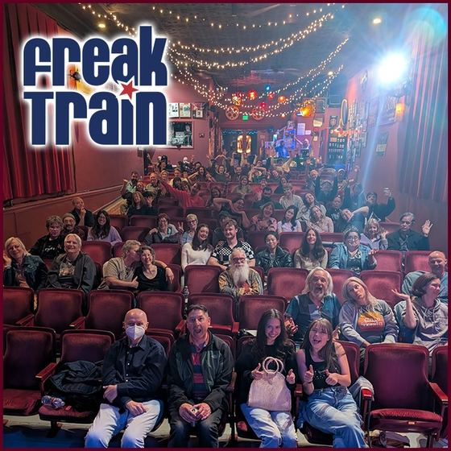
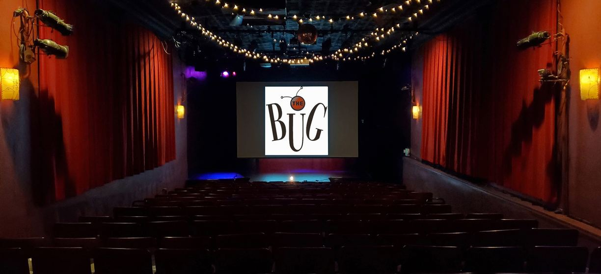
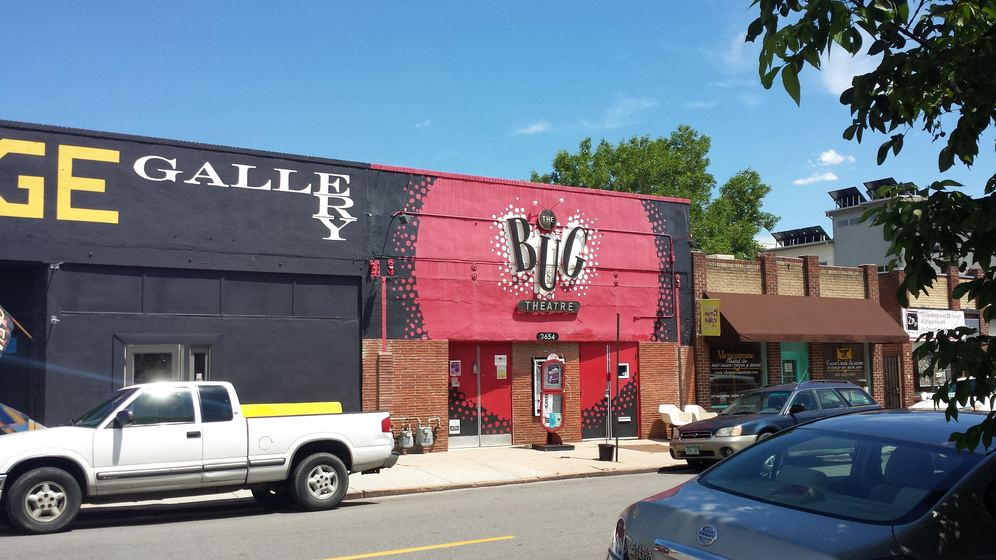

Freak Train Open Mic Variety Show
The Bug TheatreDenver
Last Monday of the month (except sometimes December)
from 8:00 PM
- Signup 7:00 PM
- How to sign up
- In person; first 12 to sign up get 5 minutes
- Host
- GerRee Hinshaw and Alex Weimer
- Cover
- $5 (includes beer)
3654 Navajo St